衣料品店・入口
A1F-044-front / eye [370.607181029605, 1.65, 48.6470166926585] / look [366.066699527818, 2.5, 52.868867913619] / FOV 78.0

コスメ・ファッション・カフェ・家族の人物広告。Cキッズ店の成人マネキンを含む中央什器を子どもサイズの衣類・靴へ置換。Bベーカリー入口に実際のレジ経路と対応する案内。F9の既定配置の絞り込み・欠落タイトル・参照画角の反映を修正。
改修と未完成 / 8面の掲出台帳 / 3館掲出位置図PDF / 前回と今回の139店舗台帳 / 通行・操作結果
物理検査の詳細 / 実入力・ボタン操作15項目 / 画像・モデルの出典 / ソフトウェアGPU描画負荷 / 480店舗と原本の保護 / 新規フォルダ起動確認
人間による実操作とWindows GPU測定は未実施。144FPSは設定上限です。画像生成した素材そのものと、実際のゲーム内表示を区別しています。
左v29.1／右v29.2。13視点×2、1920×1080。同じ位置・向き・FOVです。NPCは起動後に凍結、アニメーション時刻の完全同期はしていません。画像をクリックすると原寸表示。
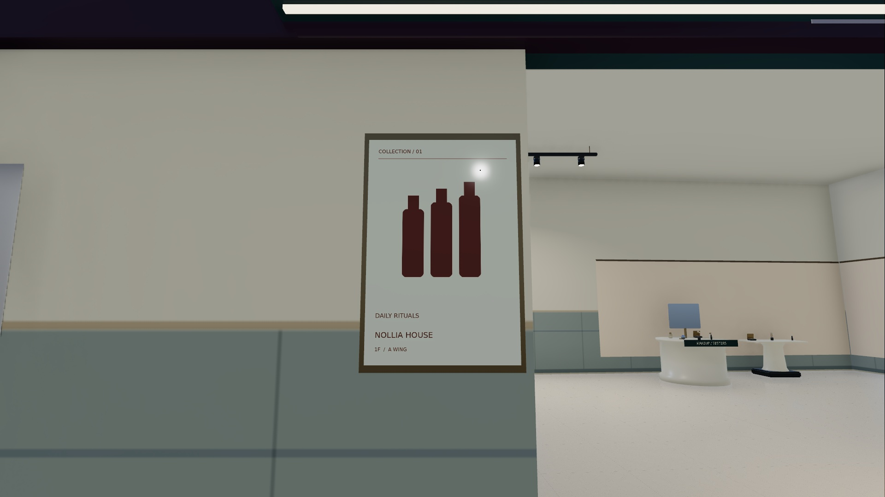
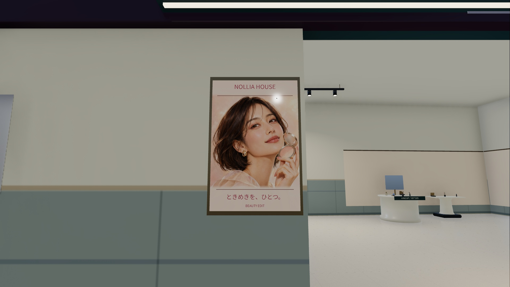
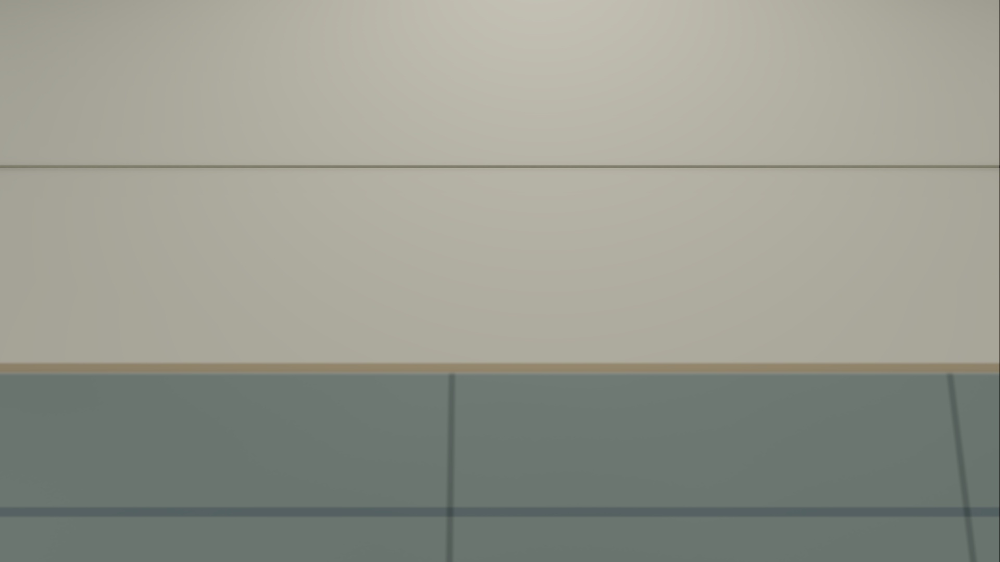
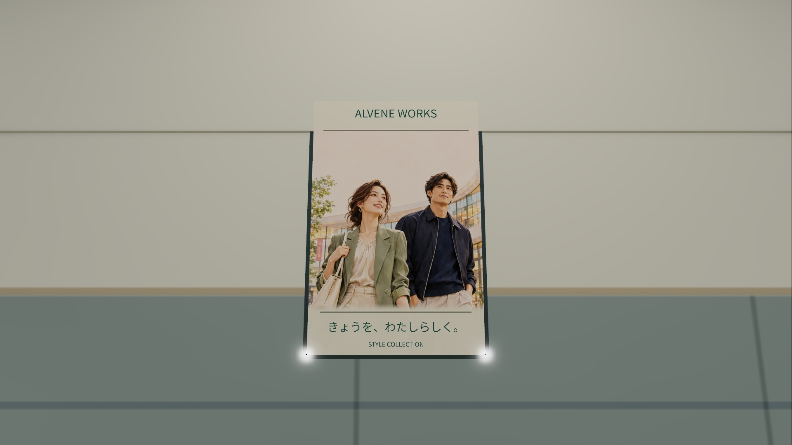
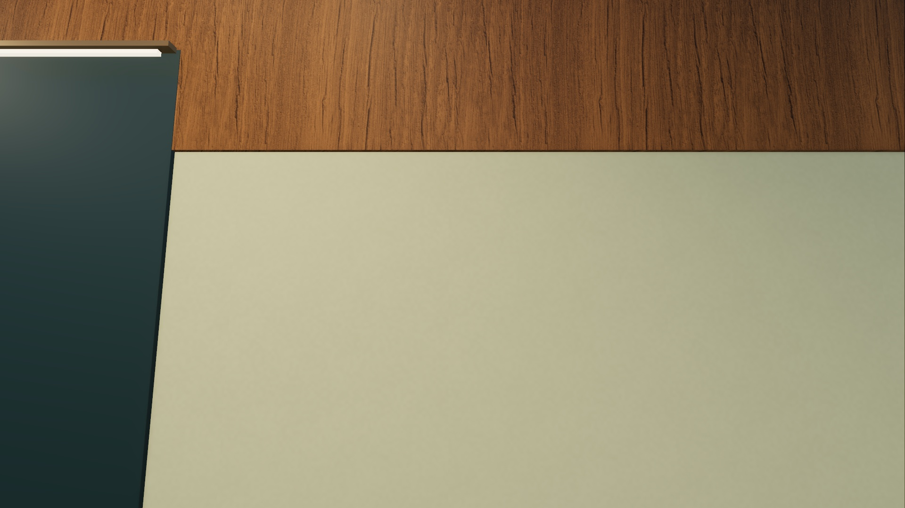
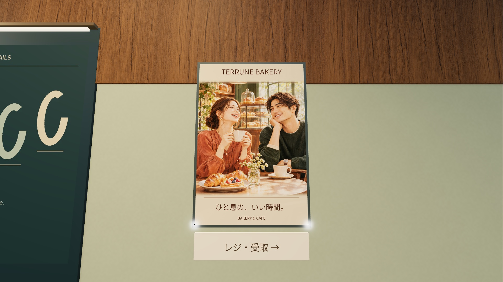
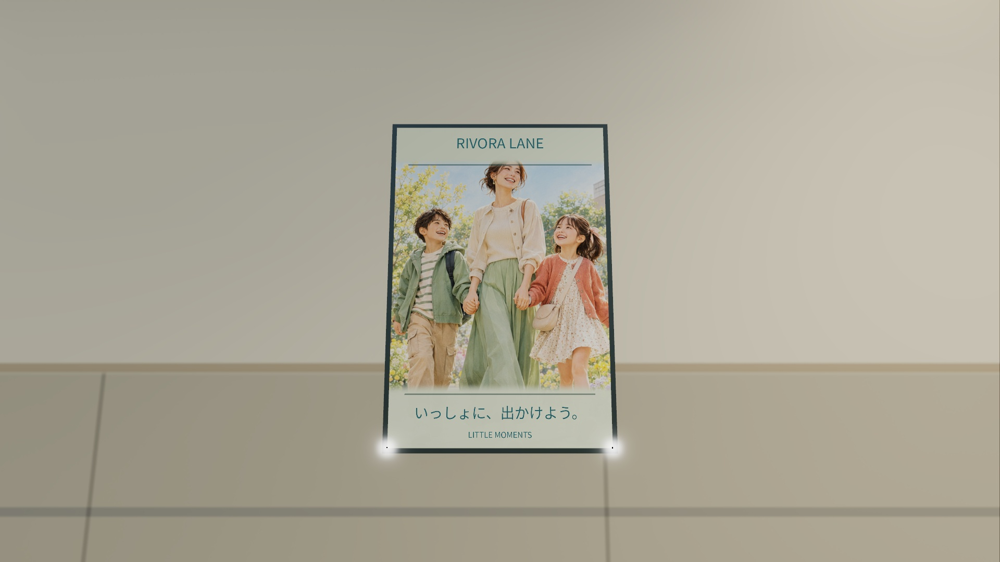
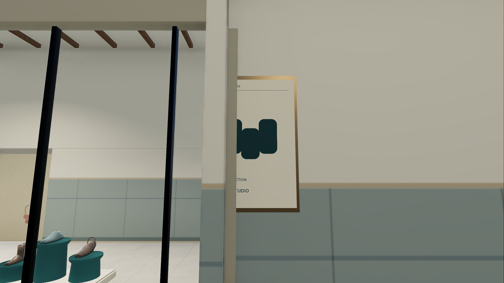
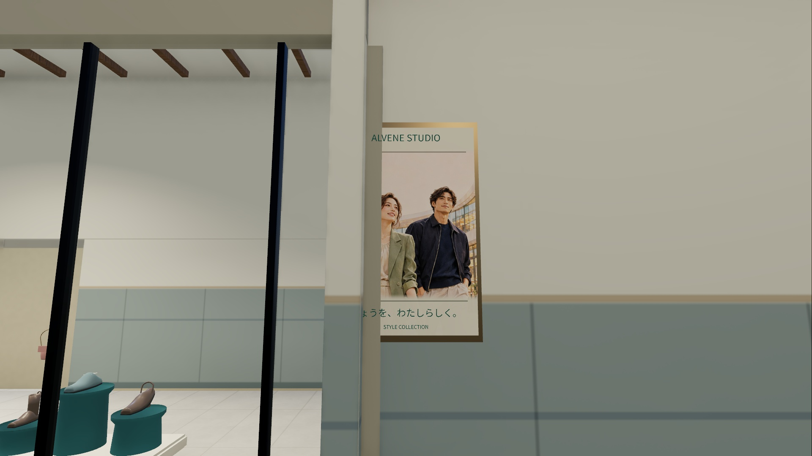
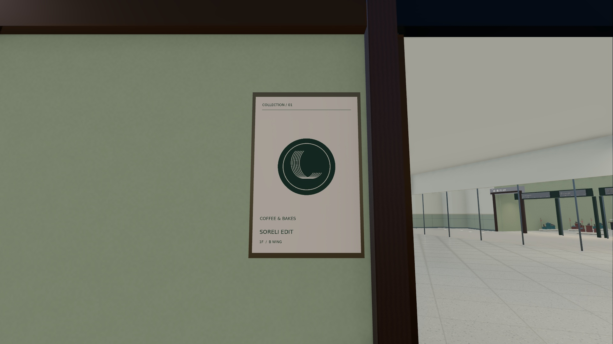
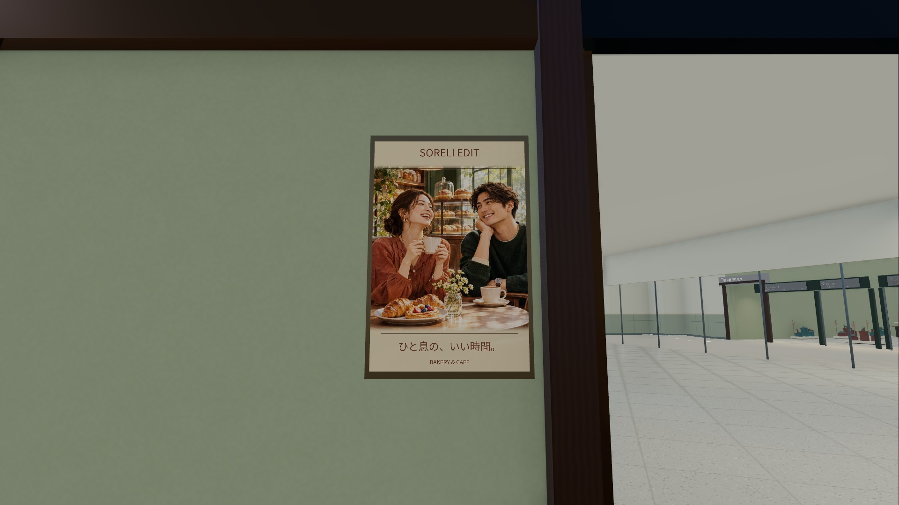
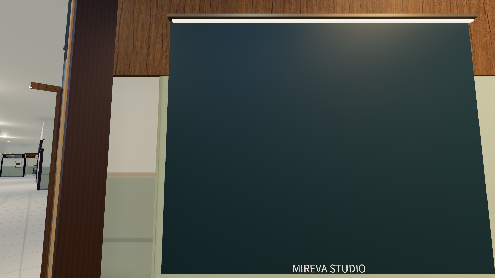
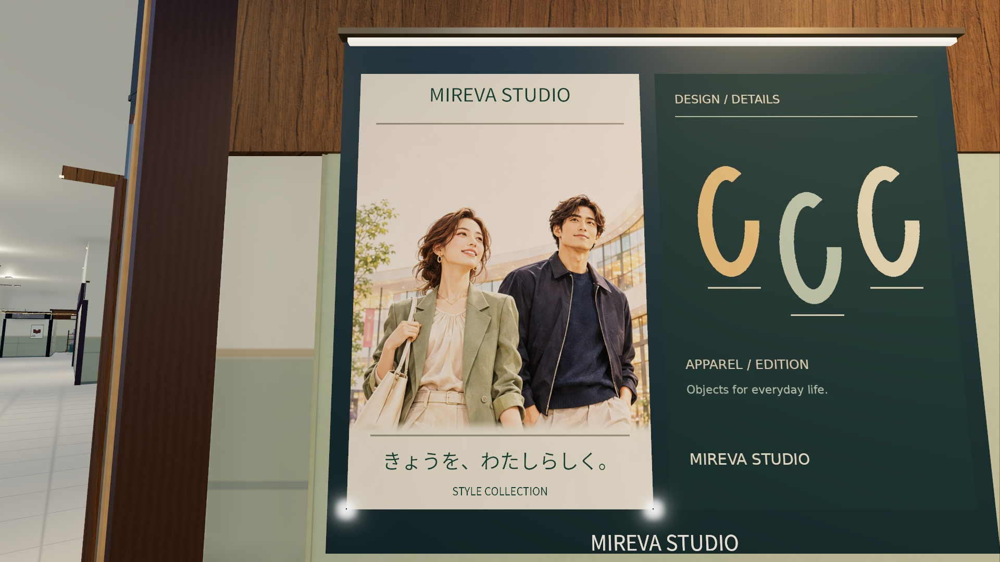
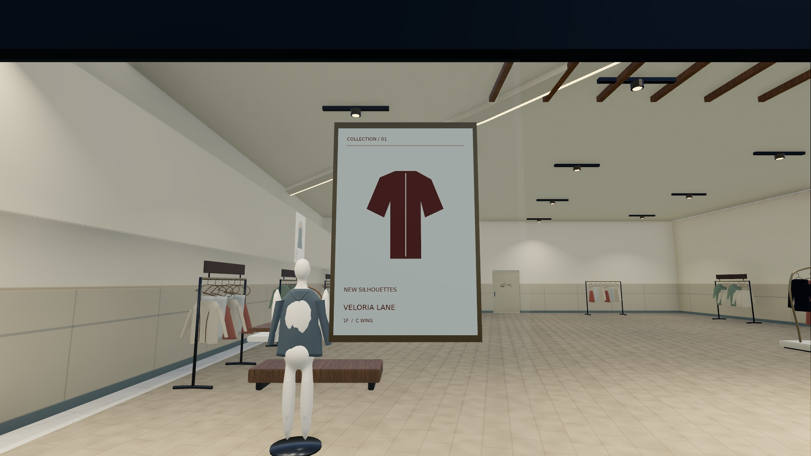
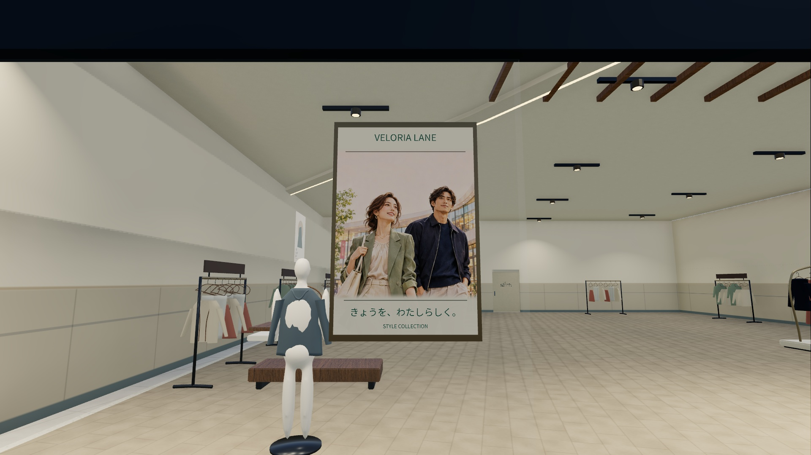


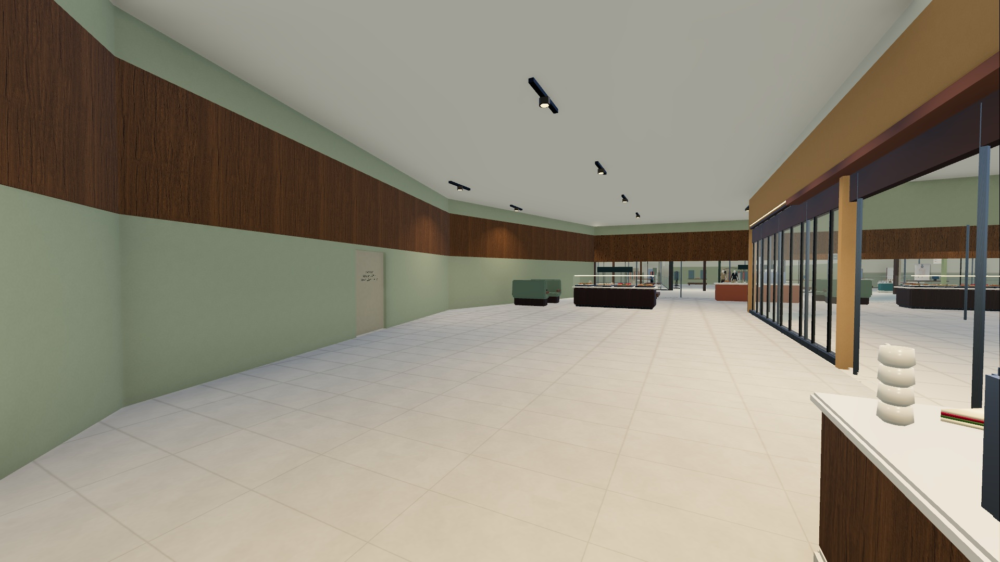